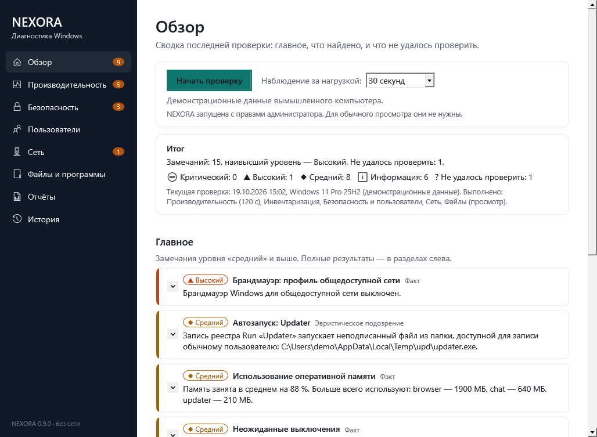
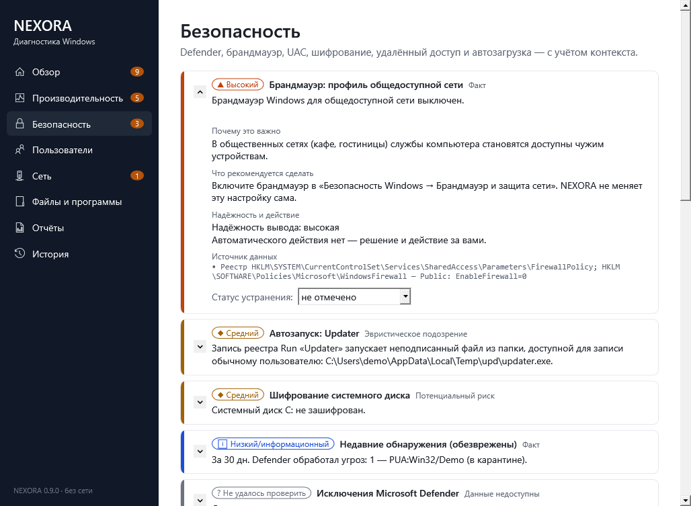
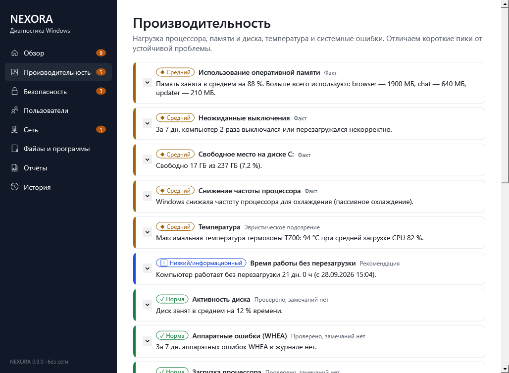
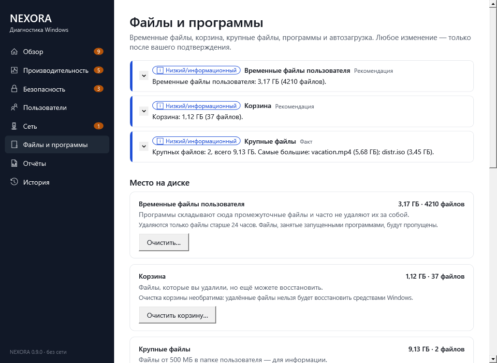

Офлайн-приложение для Windows 10/11: почему компьютер тормозит и греется, что в нём установлено и насколько базово защищена система — с честным отчётом, где факт отделён от подозрения.
Портативная программа: распакуйте ZIP и запустите Nexora.exe. Установка, права администратора и .NET не нужны. 57 МБ.
Программа не подписана сертификатом — Windows SmartScreen может предупредить о неизвестном издателе. Сверьте SHA256 архива. Это первая версия: проверена на Windows 10 22H2; на Windows 11 ещё не проверялась.




Редакция и сборка Windows со сроком поддержки, процессор, память, диски и их состояние, сеть, программы, обновления, драйверы, устройства с ошибками.
Нагрузка CPU, памяти и диска по процессам за 30 с – 5 мин; короткий пик отличается от устойчивой проблемы. Температура — только из реального датчика, снижение частоты, ошибки дисков в журнале.
Локальные учётные записи, кто входит в «Администраторы» (по SID — на любой локализации), гость и встроенный администратор.
Defender или сторонний антивирус, базы, исключения, брандмауэр по профилям, UAC, BitLocker, RDP, SMB1, WinRM, автозагрузка с эвристиками, обнаружения Defender.
Какие порты слушает компьютер, каким процессом и службой, что разрешает брандмауэр. Другие устройства не сканируются.
HTML и JSON с маскированием имён и адресов, локальная история, сравнение проверок, отметки «устранено».
Цвет — только подсказка: уровень всегда подписан текстом и значком.
| # | Этап | Статус |
|---|---|---|
| 0 | План, архитектура, документация | готово |
| 1 | Каркас WPF-приложения, сборка и тесты | готово |
| 2 | Инвентаризация системы (только чтение) | готово |
| 3 | Производительность и процессы | готово |
| 4 | Пользователи, группы, безопасность | готово |
| 5 | Локальный сетевой аудит | готово |
| 6 | Отчёты HTML/JSON и интерфейс | готово |
| 7 | Предпросмотр очистки без удаления | готово |
| 8 | Безопасная очистка с подтверждением и журналом | готово |
| 9 | Тесты, документация, выпуск | готово без установщика и подписи |